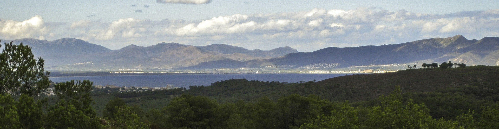

Ruta · Montgrí
Un massís calcari que s'alça sobre la plana, El Montgrí. Un gran riu que es va desviar del seu curs, El Ter. Un vent furiós que arrossega la sorra, La tramuntana. Són els actors principals que en…